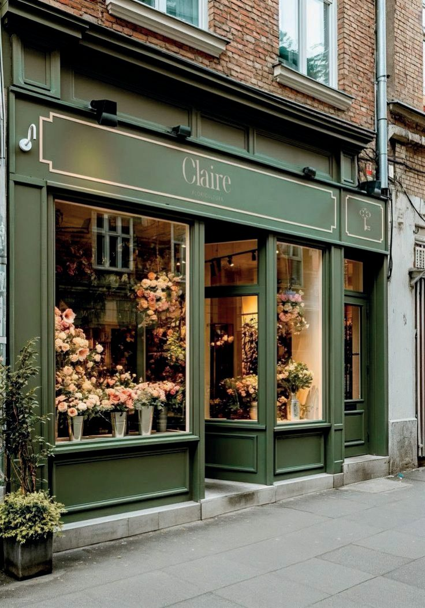

Maison de Tara est née d'un équilibre entre deux cultures, deux rythmes, deux façons de vivre.
J'ai grandi entre l'Inde et la France, dans une maison remplie de tissus, de motifs et de gestes artisanaux transmis naturellement. J'y ai appris la culture du fait main et du temps long et, en même temps, le goût du détail, la simplicité élégante et le sens de l'espace.
Je viens d'une famille où l'on recevait beaucoup. Chez ma grand-mère, la maison était toujours ouverte, pleine d'objets anciens chargés d'histoire. On y prenait le temps de créer, de partager et de se retrouver, sans jamais en faire trop.
Maison de Tara est née de tout cela : une maison vivante et communautaire, entre tradition artisanale et élégance contemporaine. Un lieu où la matière, les gestes et les objets ont du sens. Un lieu que l'on habite, le temps d'un moment.
Ici, on vient ralentir. On choisit une pièce en céramique, on s'installe, on peint librement. On prend un café, on reste un peu plus longtemps que prévu. Et tout autour, des objets et des matières racontent une autre façon de vivre. Si certains vous accompagnent chez vous, c'est simplement qu'ils vous ont trouvé.
Tara

